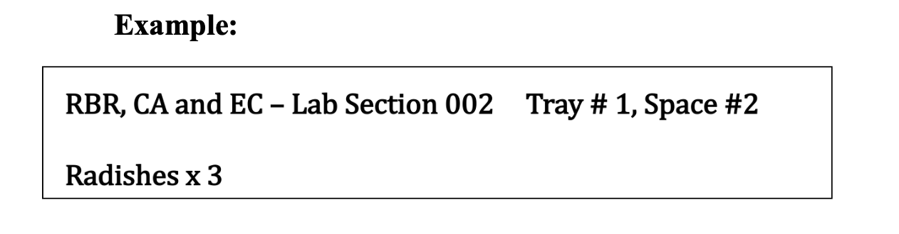

Chapter 11 Species interaction project
11.1 Introduction
When you look at a given ecological community (whether it’s a ponderosa pine forest, a meadow, or a garden), you are looking at the combined results of thousands of interactions. Interactions can occur between species (i.e., interspecific interactions) or within (among the same) species (i.e., intraspecific interactions). Studies of ecological interactions are important in a range of disciplines, including agriculture, disease ecology, restoration, forestry and fisheries.
In this lab, you will use an experimental approach to explore various types of ecological interactions. This lab will require you to develop scientific questions, generate hypotheses, and design tests that will allow you to gather evidence to support (or fail to support) those hypotheses. This is a multi-week lab. On the first day of the lab, you will select and initiate your experimental tests. You will also begin to plan a final poster based on this lab. Over the next six to seven weeks, you will visit your experimental plants to measure their growth.
Organisms interact with one another to obtain food, protection, transportation, growth substrate, and other requirements. In interactions, the service or substance exchanged between organisms is known as “currency.” Like an exchange of money, currency exchanges can be two-way (where both organisms receive something beneficial) or one-way (where only one organism receives something beneficial. Furthermore, one-way exchanges can exert a negative effect on the other organism (as in the case of predation) or may have no effect on the other organism. The characteristics of ecological communities are determined by interactions between organisms. That is, ecological interactions dictate what species are present in a given environment and in what numbers, what species are able to colonize or invade a particular location, and sometimes even whether species become extinct.
Ecological interactions are often classified by an interaction sign (Table 1). The sign is a reflection of the impact of the interaction on the reproductive potential of each participating organism. Interactions that are mutually harmful are delineated with two negative signs (-,-). Interactions that benefit one organism while being detrimental to another are delineated with a negative and a positive sign (-,+). Interactions that are mutually positive are delineated (+,+); and so on.
Understanding the sign of a given interaction can be important for predicting its effects on the community. If a new species is introduced to a site and acts as an herbivore, for example, it may be expected to decrease the reproductive potential of one or more plants in the area. This in turn can alter the abundance of those plants, and perhaps their competitive interactions or ability to interact with their pollinators or with other herbivores.
Over the next six to eight weeks, you will visit your experimental plants in the greenhouse every week to measure their growth. At the end of that time, you will perform final measurements on your plants and dispose of them. Toward the end of the semester, you will turn in a poster reporting your results.
11.2 Objectives
- To explore ecological interactions using plants as model organisms.
- To become more familiar with (and comfortable with) the scientific method of inquiry.
- To practice scientific writing.
11.3 Week 1
11.3.1 Downloads for this lab
Please download:
- A reading about plant species interactions
- Experimental design worksheet for turn-in
- An example data sheet
This is a datasheet for an experiment with 12 pots and two species, with each pot containing species A & B. You may need to adjust the structure of the dataset depending your experimental design
We will be working in the NAU greenhouse. For those of you who have not visited the greenhouse yet, here is a mapped location:
11.4 Overall procedure
This lab will run between 6 and 8 weeks. The first week will be devoted to hypothesis generation, experimental design, and planting. During the following weeks, while the class is completing other lab assignments, students should arrange with one another to ensure that the plants from this experiment are measured at least once per week until the end of the experiment. At that time plants will be removed from pots and their root and shoot lengths measured and biomass placed in a drying oven.
In this lab, you will evaluate ecological interactions in very small, micro-communities: greenhouse pots. Considering your previous experience and the knowledge you bring to the lab, consider what might happen if you plant certain combinations of seeds in a particular pot and why a particular pattern might emerge.
Available to you are multiple plant species. By sowing these plants in pots, separately or together, you can create small-scale communities. Working in groups, develop one to two scientific questions relevant to ecological interactions among or within the species at hand. To do this, begin by brainstorming what sort of ecological interactions might occur if various combinations of seeds are used. Then, develop a question about an ecological interaction that is of interest to you and might be expected to occur among these species. Write down your question(s). You may want to google species that you use in your project in order to inform your question and hypotheses.
Develop a hypothesis for your scientific question. Hypotheses are possible answers to your questions. Write down your hypotheses. You’ll include these in your poster. Check with your instructor to make sure you’ve appropriately developed your hypotheses.
Consider the type of evidence that might support each of your hypotheses (“if… and … then…”). Develop experimental tests (plant species/number of seeds) that would give you the evidence for each of your hypotheses. Ensure that the experiments you design are scientifically robust (controlled, quantifiable, unbiased, repeatable, falsifiable, etc.).
Note: Since we have limited space, we won’t be able to ensure independence of our replicates
- Carry out your experiments. Each group of students will have the use of at least 12 small pots, labeled with your names. Note that most questions/hypotheses will require more than one pot (for example, pots for controls and treatments). Thus, the number of questions and tests carried out may vary among pairs of students. Carefully record the species and number of seeds used on a white label inserted into each pot so you know for sure what each pot contains. Each white tag should include: Your group’s initials and lab section number. Tray # and Space # and what’s in each pot and the quantity.
Here is an example label: 
Note: the greenhouse is open between 7:00 am - 3:00 pm & you will need to get the greenhouse code from your instructor.
11.5 Set up your experiment
Now that you have generated your question, hypothesis, and identified what evidence you need to gather (if/then statement), set up your experiment. When planting, ensure sufficient light: smaller seeds should be buried approximately ¼ inch below the soil surface, and larger seeds approximately ½ inch. Take a photo of your pots once they are planted and the labels are in place.
11.6 Creating your Data Sheet
- You should create a data sheet with your group members to successfully record your data for the next 6 - 8 weeks. Do this by modifying the example data sheet that we have provided.
- Here are a few suggestions for recording data:
- If no germination, record “No” or 0.
- If dead, record “No” under the survival column or 0.
- If multiple shoots per species, you may want to record the average height.
11.7 Turn-in week 1
- Name of group members
- Date of planting
- Question/s
- Hypothesis/es
- Evidence (if/then statement)
- Drawing of your experimental design
- Your data sheet and a description of what you will measure each week
11.8 Weeks 2 - 5
During this time, you will be maintaining your experiment and continue to collect data.Make a schedule with your group members to ensure that someone will measure growth of the plants at least once per week over the next seven weeks. The same person should also photograph the plants each time measurements are made. To measure each plant, place the end of a ruler against the soil surface. Gently pull the plant to its full height and measure the tallest point intersected along the ruler by the plant. ALL MEASUREMENTS ARE IN MILLIMETERS!
Note: the greenhouse is open between 7:00 am - 3:00 pm. You will need to get the pass code from your TA!
11.9 Final week
11.9.1 Downloads
Please download:
Once you have all of your data, you will prepare a poster with your group detailing your experiment and its outcome. For the poster you will follow standard scientific writing style (see handout). Using the statistical lessons and R scripts that you have received earlier in the semester, analyze your data and create figures. Remember the correct methods for reporting results and writing figure lessons.
11.9.2 Turn-in
Submit your poster as a PDF to your lab instructor through canvas (or via email, if instructed by your TA). Only one person in your group needs to submit. Each group member must also submit a peer evaluation, assessing the contribution of each group member.
The poster is in format C, which means that the poster must include:
- 5 sources cited (look at other poster examples to see how to cite in text without using a lot of space)
- An introduction, methods, results, discussion, and conclusion section.
- Include least one figure or table and one photo of your plants.
Other notes:
- You do not need an abstract on this poster.
- 15% of your grade will be determined by your group mate’s assessment of your participation level.